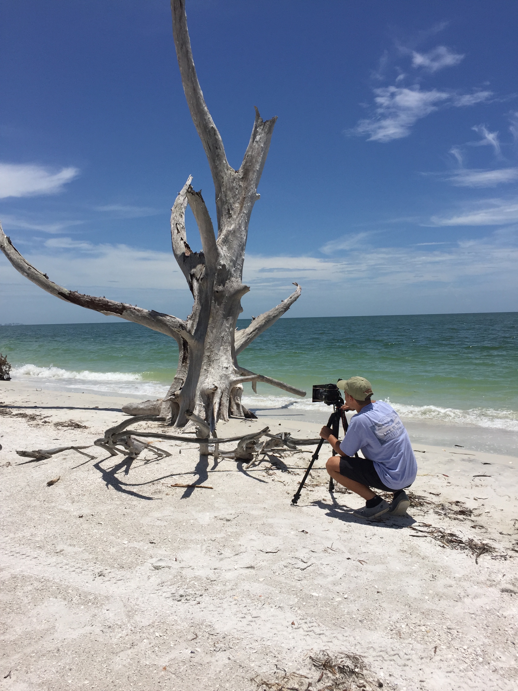

Hi. Thanks for taking the time to check out my work. My name is Maxx Evan, and I am currently 19 and studying at the University of Miami. A few years ago I picked up a camera, and haven't looked back since. I am extremely passionate about photography and strive to create the best quality work that I can. The feeling I get when behind the lens is indescribable. I put my all into my photography because I love it. Right now, its impossible for me to imagine where my life would be if I had not discovered photography, it's my passion. As I continue to grow and progress, I find myself shooting new things, broadening my perspective, and becoming a multi-faceted artist. I am extremely thankful for the opportunities that photography has presented me with. I hope you enjoy my work. Click here to see my resume!
